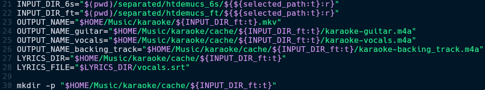
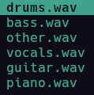
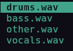
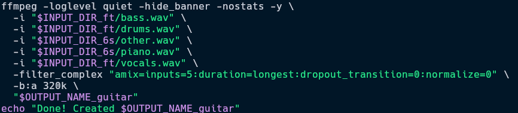
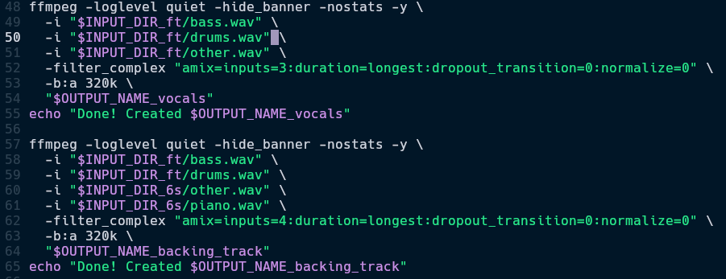
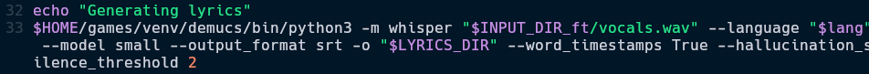
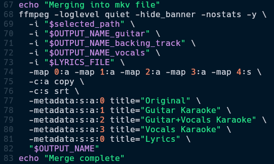
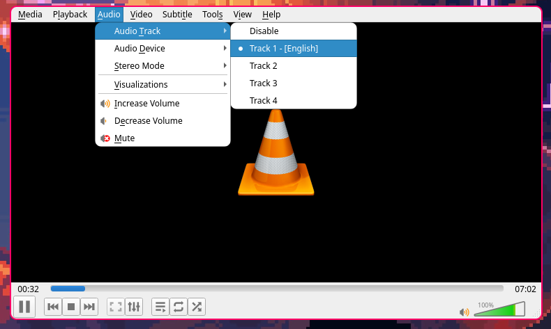
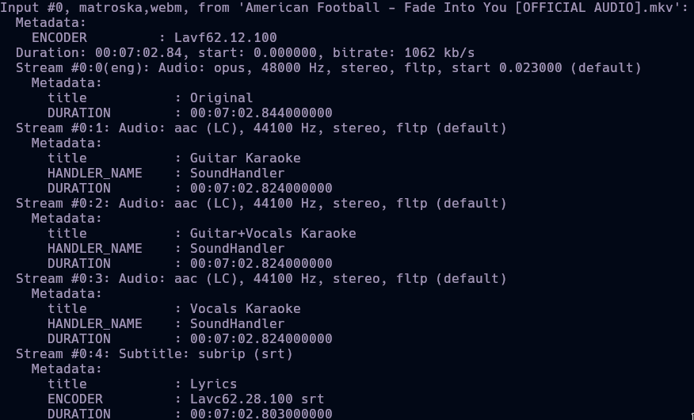

DIY or DIE-
- Us

It's like I can reverse engineer music now?
creepy... (⁀⊙﹏☉⁀)

I recently got a guitar and found out that most of the guitar learning tools cost money, subscriptions even. It took me ~2 months to learn how to play by ear using trial-error, therefore I made this program for myself where I use Demucs, Whisper, ffmpeg and some tinkering to make this shell script that produces one mkv file that has the original version, a vocal karaoke version, a guitar karaoke version and a backing track along with automatic lyrics. The mkv video file can be played on any device that has VLC or a similar media player installed.
Ever since I got my guitar, I've been paying more attention to the Instruments rather than the song as a whole. After a long time (I didn't like the song earlier), I listened to this song → Blur - Song 2. I felt like I could try playing along and get better at playing guitar. That's when I remembered what demucs could do and started working on this project.
Table of contents →
- Files
- Splitting the song into individual instruments
- Auto-Generate Lyrics and Mixing
- Custom Player
- Demo video on YouTube
Files
- yt-dlp is the tool I used to download the song from youtube. Youtube's best audio format is in .webm, so I downloaded the song in that format.
- I used ranger, a terminal-based file manager as the UI to choose the song.
- Since demucs uses ffmpeg in the background and converts any file to .wav, I did no conversion after selecting the file.
- Initialised the necessary variables and directories.

Splitting the song into individual instruments
- I used demucs by Meta, to split the song into various stems as seen here. I was mainly interested in two of them -
-
htdemucs_6s→ [6s - 6 stems] This is the most versatile demucs model. It can split up a song into these stems.
htdemucs_ft→ [ft - Fine Tuned] This one is arguably the better model in terms of raw accuracy as it is a bag of 4 models, but it misses one crucial thing I am interested in → the guitar stem...
-
- I was in a fix what model to use. That's when I got an idea. I tested it out with multiple songs and came up with these equations. As seen in the image below, I used
bass.wav,drums.wavandvocals.wavfrom demucs_ft andother.wav,piano.wavfrom demucs_6s.
I was so excited when I figured this out that I got up to get a glass of water (rare event)
- I followed the same stem selection process for Vocals Karaoke and Backing Track.


AAC (.m4a) is the only thing popularized by Apple I can accept
Oh, and maybe ipods
- The reason I used
-b:a 320kand.m4ais because AAC audio with 320 kbps is basically the same quality (almost) as lossless .wav file but almost 1/5th the size. - I initially thought I might come across problems because, but then I thought of this →
demucs_ft[ other.wav ] = demucs_6s[ other.wav + guitar.wav + piano.wav ]. It must be fool proof, keeping the performance of the models aside. - Both the models take a little over a minute for a standard 4 minute song combined.
Auto-Generate Lyrics
- Since we now had vocals.wav, we can directly use whisper, by OpenAI to auto-generate the lyrics. This is not very promising, but is okay for now.
- Once the venv setup was done, I used the cli to get the lyrics for a song using the following code snippet.

- It produced a .srt file. It's just like a simple text file with timestamps of the subtitles, in our case, lyrics.
Tch (ᗒᗣᗕ)՞
What a bummer
- I tried to use whisper's fork → whisperX as it can highlight each word at the exact time it was said in the audio, like how Karaoke actually works. Unfortunately, my GPU is too old and does not support the CUDA version required for using whisperX. I also tried using an older version of whisperX but then got into dependency hell. I decided I will work on the auto-generated lyrics later and moved on, for now.
- 1 week later: I tried using whisper.cpp and it worked surprisingly well. Infact, I was able to use the best whisper model which would OOM when used in the python runtime. I was also able to setup per word (karaoke lyrics) subttitles and it worked well for some songs. But I found another problem... Yes, even with whisper's best model. No matter what kind of tuning I did, be it VAD (Voice Activity Detection) threshold or max tokens for context prompt. Every song needed it's own tuning and it's own prompt.
- Idea for future upgrades: Fuzzy match real lyrics with the lyrics generated by the ASR program (Whisper, but I was considering Vosk, as I have already tested it's capability with fuzzy matching in another project). This way, we will be clear of all hallucinations and the program will only have to match the timing.
- Now that the audio files and the auto-generated lyrics are ready, we can add all of the produced files into a single .mkv container.
- Trivia: A .mkv container, also called Matroska Video is one of the most versatile video formats, it can contain multiple video streams, subtitles and also audio tracks. This is the format used when we used to watch Hollywood movies 15+ years ago which had subtitles of almost every single language.
- I used
ffmpeg, once again, to combine all of the .m4a audio tracks and lyrics .srt file.
I should load these to my ipod touch once it finishes charging...
It's been charging for a month now (⋟﹏⋞)
- Once this is finished, there is some cleanup to do. And then, we can play the video on any media player.
For example, I use VLC Media Player here.

- We can see the metadata of the file above. This file can be played on phone, laptop, etc. Any device supporting VLC Media Player or a similar app will be able to have the Karaoke experience.
Custom Player
- Now that the file can be played anywhere, I thought of making a custom Karaoke Player using PyGame.
- It took a while, but it was ready. A custom player where all instruments react in their own way and also enable or disable. Here is the video.
- I then proceeded to generate
.ass(Advanced SubStation Alpha) which can make the subtitles move and have effects in a more dynamic way. The lyrics border get thicker with bass, shake with drums and show a chromatic aberration effect with guitar. - Honestly, I like the .mkv container better. It has 5 audio tracks, reactive subtitles and can be viewed on any device, even my TV.
Damn, time to learn to play
Knights of Cydonia